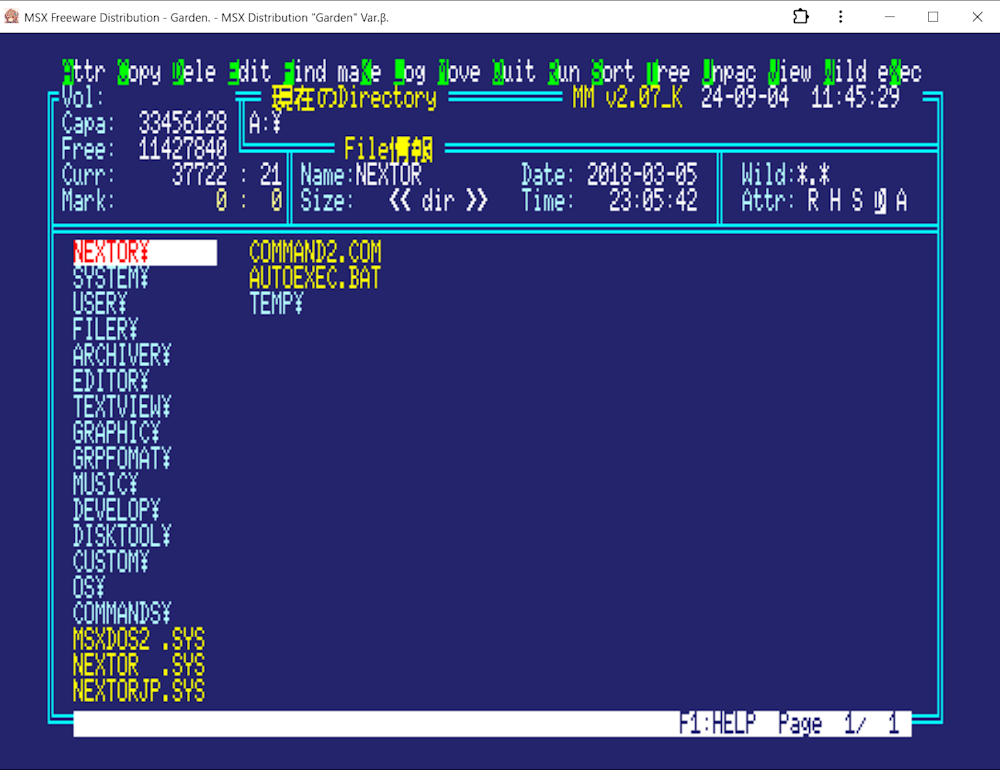
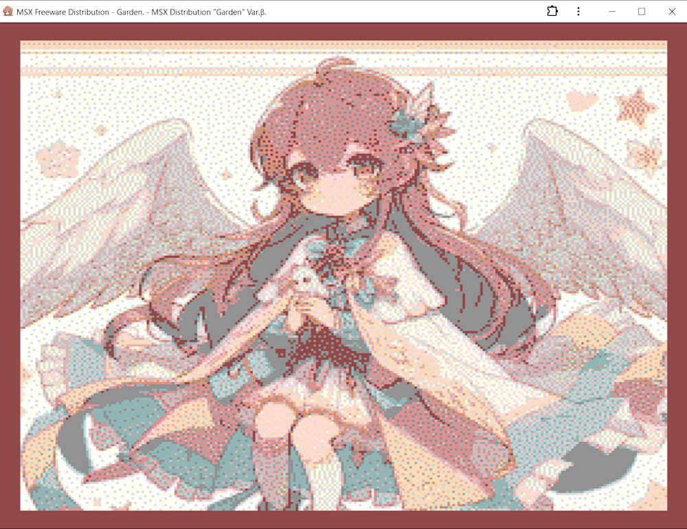

MSX Freeware Distribution "Garden".

All About Garden.


MSXのロストテクノロジーでオーパーツなフリーウェアをWEBMSXのディスクイメージでまとめました。昔のパソコンオタクを追体験できます
xNIXな無料のOSが増え、それらへ無料のアプリを追加して使えるディストリビューションが増えていて。ＭＳＸも非営利利用を前提としてWEBMSXやNextorOSが無料で利用でき、わずかながらでもフリーウェアが残っているので。それらのフリーウェアの散逸の防止と有効活用を目的としてディストリビューション・ライクな形でフリーウェアをまとめてます
ＯＳ、エミュレータ、および、それぞれのアプリなどなどは、それぞれの著作権へ属してます。著作権表示などを見落としている場合もあると思いますので、その時は教えてください。速やかな対応を行います
非商用非営利なのでgithubへ置いておきます
今回の活動では、MSXHUBの影響を大きく受けてます。元々、WEBMSXでフリーウェアを纏めると言うコンセプトはありましたが。MSXHUBのフリーウェアを使う事で、MSXDOSのディレクトリはフロッピーディスクと同じ扱いで使えるんだと気づけたので、今の形でまとめれました。当方は、MSXHUBの敵では無いですよ！ ∶-)
上手く実行出来ない時は、MMを終了してからDOS画面でコマンドを実行すると動くかもしれません（Small-Cなど）。あるいは、MSXDOS2/NEXTORのサブ・ディレクトリと対応してないので実行出来ない場合もあるので、その時は実行DSKファイルを作ると実行できるかもしれません（LAEなど）
"Girden"を旗艦としてフリーウェアのディスクイメージを作成する事も可能です。作成する時は、WEBMSXでブートディスクを作成し、アプリのファイルをコピーしてディスクイメージで実行してください。作成したDSKファイルは、それぞれのMSXエミュレータやMSX０で利用できます
簡易的なPWAへ対応しました。当githubのGardenを実行している時、ショートカットを追加するとパソコンやスマートフォンなどへ追加でき、ファイルのキャッシュが残っている間はショートカットアイコンからオフラインでも実行出来るはずです。バグがあれば教えてください
英語"Garden"の語源は、ラテン語で「閉ざされた楽園」って言葉らしいですよ
"Garden"は、MSXライセンシングコーポレーションとは関連の無い個人が非商用非営利で活動するボランティア活動です
WANTED
MERON氏による画像圧縮プログラム、及び、シロピョン氏によるコンパイラ言語ＴＬＸの許可を取りたいので連絡先を教えてくださる方はいらっしゃいませんか？Download.
WEBMSXで使えるハードディスク・イメージディスクをダウンロード出来ますDownload.
Allright 2024 The Gardens.